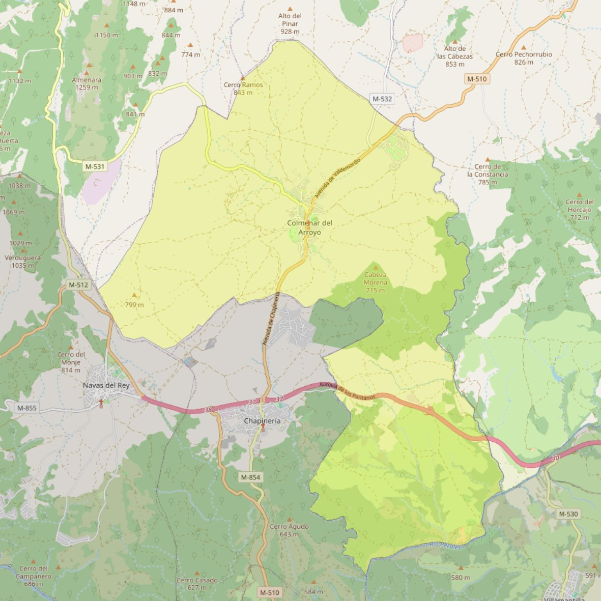

Nuestra Señora de la Asunción

- Arciprestazgo
- San Martín de Valdeiglesias
- Población
- Colmenar del Arroyo
- Dirección postal
- Pza. España, s/n
- Código postal
- 28213
- Extensión
- 49,18 km² (4.918 ha)
- Teléfono
- 918 651 396
- Correo electrónico
- nsasuncion-colmenardelarroyo@diocesisgetafe.es